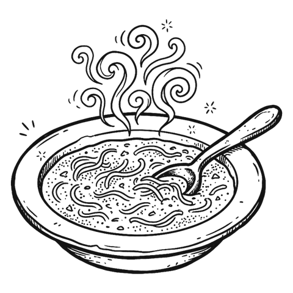
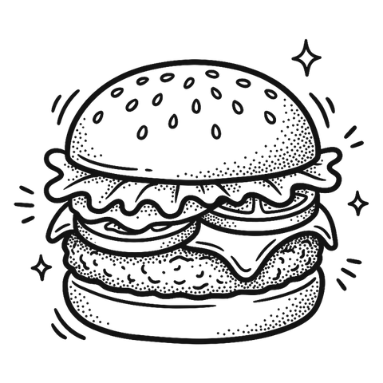
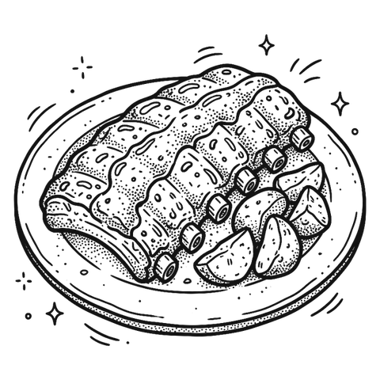
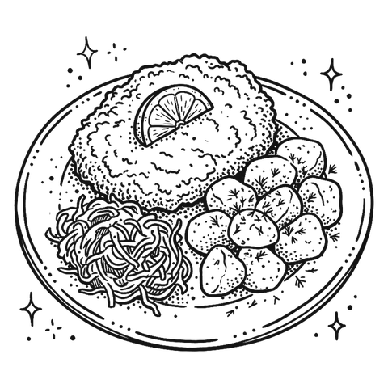
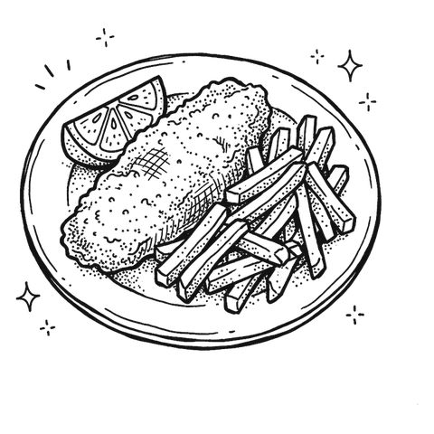
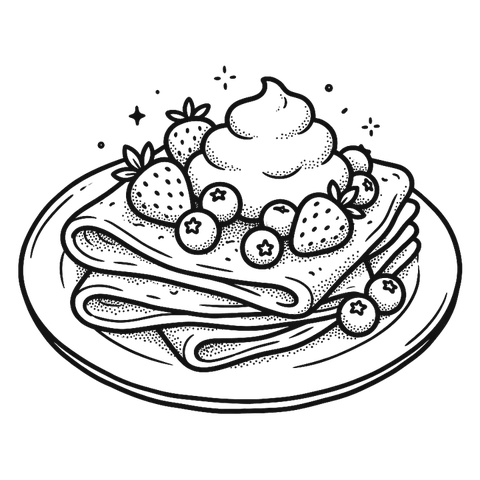
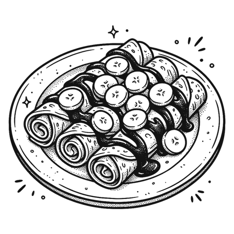

Zaznacz, co chcesz zjeść. Możesz wybrać kilka rzeczy albo zdać się na los.







Zaznacz coś albo kliknij „Wybierz za mnie”.
Nie udało się wysłać zamówienia. Sprawdź internet i spróbuj jeszcze raz.
Twoje zamówienie ✦
Zamówienie poszło do kuchni.